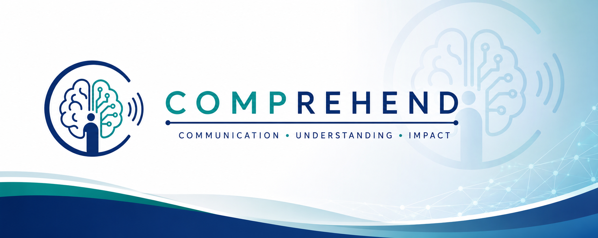

Clinical
Embeds AI-enhanced medical education in real clinical workflows and measures patient outcomes. We study how simplified, personalized content changes comprehension, anxiety, and adherence at the point of care.

Building scalable, evidence-based systems that make medical information accurate, accessible, and trusted in the digital era.
COMPREHEND aims to study how medical information is created, transformed, disseminated, understood, and trusted in the digital era.
By combining clinical research, AI methodology, and infodemiology, our goal is to build scalable, evidence-based systems that improve patient understanding and ensure medical information remains accurate, accessible, and impactful.
How does medical information actually reach the patients it is meant to serve?
Embeds AI-enhanced medical education in real clinical workflows and measures patient outcomes. We study how simplified, personalized content changes comprehension, anxiety, and adherence at the point of care.
Studies how medical information spreads across digital platforms and who controls the online medical-education ecosystem. We map the creators, channels, and incentives shaping what patients read.
Builds the computational tooling that underpins the other branches: fidelity metrics, prediction models, and AI pipelines that translate complex medical text into trustworthy, readable language.
A short statement of the lab's long-term aims will live here.
Placeholder copy. Replace this card with the first long-term goal of the lab once finalized.
Placeholder copy. Replace this card with the second long-term goal of the lab once finalized.
Placeholder copy. Replace this card with the third long-term goal of the lab once finalized.
See our research or get in touch with the team.